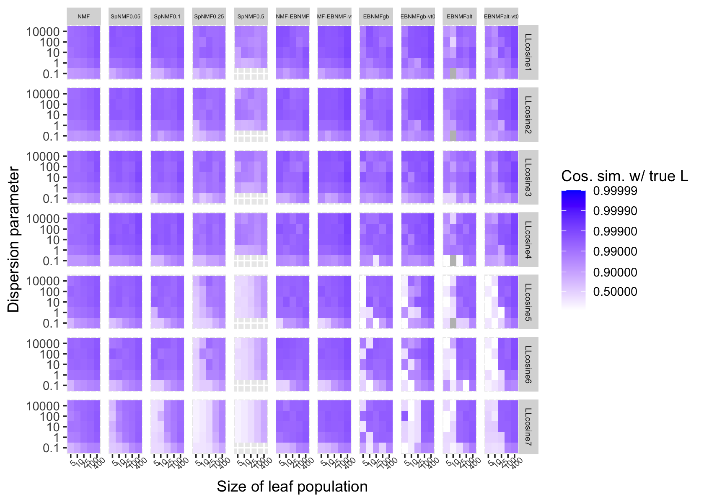
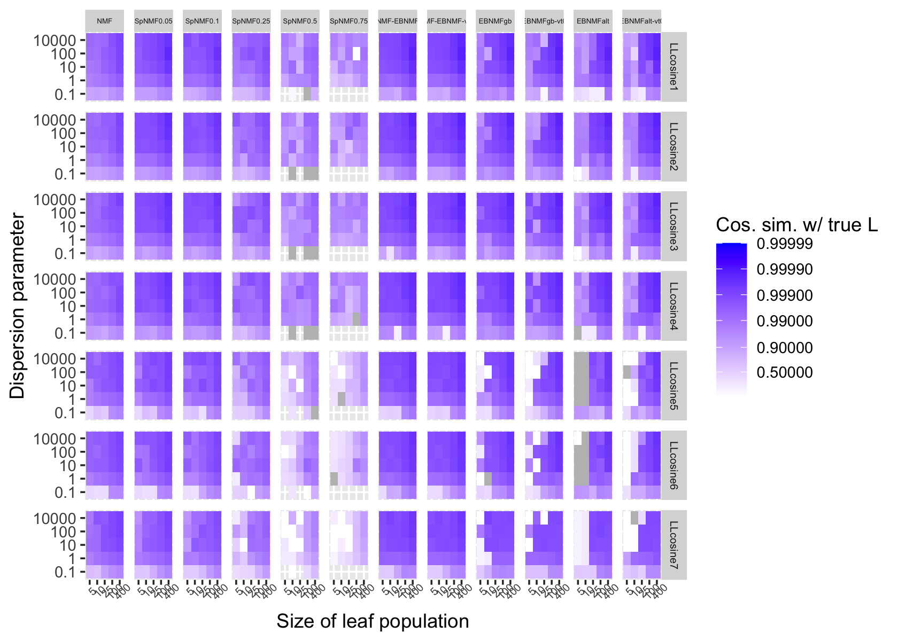
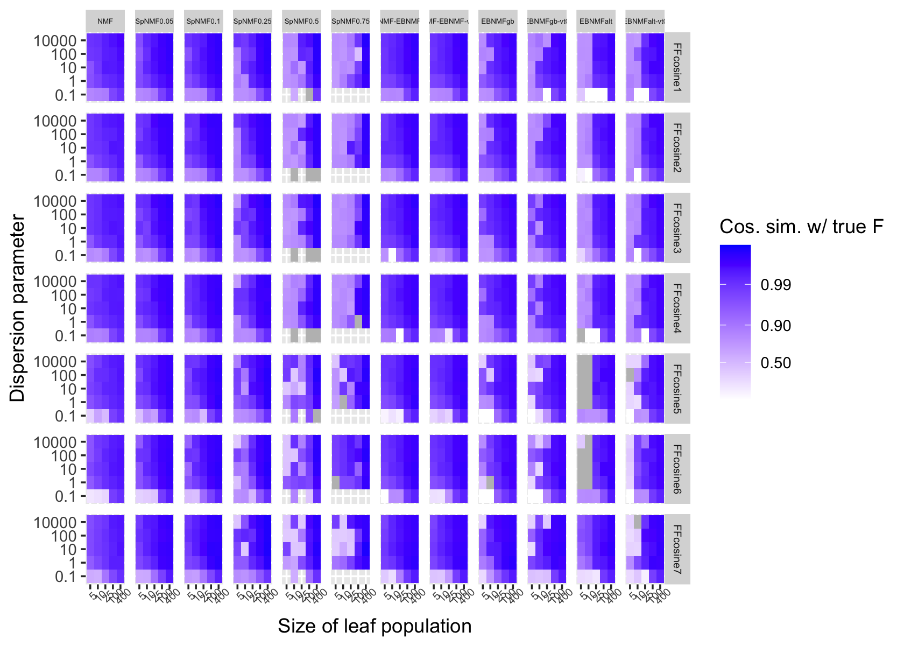

NMF analyses of simulated data, Scenario 3 (hierarchical relationships)
Jason Willwerscheid and Peter Carbonetto
Last updated: 2025-09-10
Checks: 6 1
Knit directory: ebnmf-paper/
This reproducible R Markdown analysis was created with workflowr (version 1.7.1). The Checks tab describes the reproducibility checks that were applied when the results were created. The Past versions tab lists the development history.
Great! Since the R Markdown file has been committed to the Git repository, you know the exact version of the code that produced these results.
Great job! The global environment was empty. Objects defined in the global environment can affect the analysis in your R Markdown file in unknown ways. For reproduciblity it’s best to always run the code in an empty environment.
The command set.seed(20231214) was run prior to running
the code in the R Markdown file. Setting a seed ensures that any results
that rely on randomness, e.g. subsampling or permutations, are
reproducible.
Great job! Recording the operating system, R version, and package versions is critical for reproducibility.
- sims_12nonorm
- sims_12norm
- sims_7nonorm
- sims_7norm
To ensure reproducibility of the results, delete the cache directory
sim_scenario3_cache and re-run the analysis. To have
workflowr automatically delete the cache directory prior to building the
file, set delete_cache = TRUE when running
wflow_build() or wflow_publish().
Great job! Using relative paths to the files within your workflowr project makes it easier to run your code on other machines.
Great! You are using Git for version control. Tracking code development and connecting the code version to the results is critical for reproducibility.
The results in this page were generated with repository version 622c794. See the Past versions tab to see a history of the changes made to the R Markdown and HTML files.
Note that you need to be careful to ensure that all relevant files for
the analysis have been committed to Git prior to generating the results
(you can use wflow_publish or
wflow_git_commit). workflowr only checks the R Markdown
file, but you know if there are other scripts or data files that it
depends on. Below is the status of the Git repository when the results
were generated:
Ignored files:
Ignored: .DS_Store
Ignored: .Rhistory
Ignored: .Rproj.user/
Ignored: analysis/lps_fail_fix_cache/
Ignored: analysis/sim_scenario3_cache/
Untracked files:
Untracked: analysis/simdata3.Rmd
Untracked: matlab/simdata3.m
Untracked: matlab/simdata3.mat
Untracked: matlab/simdata3_nmf_sW=0.5.mat
Untracked: matlab/simdata3_nmf_sW=0.6.mat
Untracked: matlab/simdata3_nmf_vanilla.mat
Untracked: matlab/simdata_scenario1.m
Untracked: matlab/simdata_scenario1.mat
Untracked: matlab/simdata_scenario1_k=4_sW=
Untracked: matlab/simdata_scenario1_k=4_sW=0.1.mat
Untracked: matlab/simdata_scenario1_k=4_sW=0.2.mat
Untracked: matlab/simdata_scenario1_k=4_sW=0.3.mat
Untracked: matlab/simdata_scenario1_k=4_sW=0.4.mat
Untracked: matlab/simdata_scenario1_k=4_sW=0.5.mat
Untracked: matlab/simdata_scenario1_k=4_sW=0.6.mat
Untracked: matlab/simdata_scenario1_k=4_sW=0.7.mat
Untracked: matlab/simdata_scenario1_k=4_sW=0.8.mat
Untracked: matlab/simdata_scenario1_k=4_sW=0.9.mat
Untracked: matlab/simdata_scenario1_k=8_sW=
Untracked: matlab/simdata_scenario1_k=8_sW=0.1.mat
Untracked: matlab/simdata_scenario1_k=8_sW=0.2.mat
Untracked: matlab/simdata_scenario1_k=8_sW=0.3.mat
Untracked: matlab/simdata_scenario1_k=8_sW=0.4.mat
Untracked: matlab/simdata_scenario1_k=8_sW=0.5.mat
Untracked: matlab/simdata_scenario1_k=8_sW=0.6.mat
Untracked: matlab/simdata_scenario1_k=8_sW=0.7.mat
Untracked: matlab/simdata_scenario1_k=8_sW=0.8.mat
Untracked: matlab/simdata_scenario1_k=8_sW=0.9.mat
Untracked: matlab/simdata_scenario1_nmf_k=4.mat
Untracked: matlab/simdata_scenario1_nmf_k=4_sW=0.5.mat
Untracked: matlab/simdata_scenario1_nmf_k=8.mat
Untracked: matlab/simdata_scenario1_nmf_sW=0.3.mat
Untracked: matlab/simdata_scenario1_nmf_sW=0.4.mat
Untracked: matlab/simdata_scenario1_nmf_sW=0.5.mat
Untracked: matlab/simdata_scenario1_nmf_sW=0.6.mat
Untracked: matlab/simdata_scenario1_nmf_sW=0.8.mat
Untracked: matlab/simdata_scenario1_nmf_vanilla.mat
Untracked: matlab/simdata_scenario2.asv
Untracked: matlab/simdata_scenario2.m
Untracked: matlab/simdata_scenario2.mat
Untracked: matlab/simdata_scenario2_k=3_sW=0.1.mat
Untracked: matlab/simdata_scenario2_k=3_sW=0.2.mat
Untracked: matlab/simdata_scenario2_k=3_sW=0.3.mat
Untracked: matlab/simdata_scenario2_k=3_sW=0.4.mat
Untracked: matlab/simdata_scenario2_k=3_sW=0.5.mat
Untracked: matlab/simdata_scenario2_k=3_sW=0.6.mat
Untracked: matlab/simdata_scenario2_k=3_sW=0.7.mat
Untracked: matlab/simdata_scenario2_k=3_sW=0.8.mat
Untracked: matlab/simdata_scenario2_k=3_sW=0.9.mat
Untracked: matlab/simdata_scenario2_k=8_sW=0.1.mat
Untracked: matlab/simdata_scenario2_k=8_sW=0.2.mat
Untracked: matlab/simdata_scenario2_k=8_sW=0.3.mat
Untracked: matlab/simdata_scenario2_k=8_sW=0.4.mat
Untracked: matlab/simdata_scenario2_k=8_sW=0.5.mat
Untracked: matlab/simdata_scenario2_k=8_sW=0.6.mat
Untracked: matlab/simdata_scenario2_k=8_sW=0.7.mat
Untracked: matlab/simdata_scenario2_k=8_sW=0.8.mat
Untracked: matlab/simdata_scenario2_k=8_sW=0.9.mat
Untracked: matlab/simdata_scenario2_nmf_k=6.mat
Untracked: matlab/simdata_scenario2_nmf_sW=0.2.mat
Untracked: matlab/simdata_scenario2_nmf_sW=0.3.mat
Untracked: matlab/simdata_scenario2_nmf_sW=0.4.mat
Untracked: matlab/simdata_scenario2_nmf_sW=0.5.mat
Untracked: matlab/simdata_scenario2_nmf_sW=0.6.mat
Untracked: matlab/simdata_scenario2_nmf_vanilla.mat
Untracked: matlab/simdata_scenario3.mat
Untracked: matlab/simdata_scenario3_k=12_sW=0.1.mat
Untracked: matlab/simdata_scenario3_k=12_sW=0.2.mat
Untracked: matlab/simdata_scenario3_k=12_sW=0.3.mat
Untracked: matlab/simdata_scenario3_k=12_sW=0.4.mat
Untracked: matlab/simdata_scenario3_k=12_sW=0.5.mat
Untracked: matlab/simdata_scenario3_k=12_sW=0.6.mat
Untracked: matlab/simdata_scenario3_k=12_sW=0.7.mat
Untracked: matlab/simdata_scenario3_k=12_sW=0.8.mat
Untracked: matlab/simdata_scenario3_k=12_sW=0.9.mat
Untracked: matlab/simdata_scenario3_k=7_sW=0.1.mat
Untracked: matlab/simdata_scenario3_k=7_sW=0.2.mat
Untracked: matlab/simdata_scenario3_k=7_sW=0.3.mat
Untracked: matlab/simdata_scenario3_k=7_sW=0.4.mat
Untracked: matlab/simdata_scenario3_k=7_sW=0.5.mat
Untracked: matlab/simdata_scenario3_k=7_sW=0.6.mat
Untracked: matlab/simdata_scenario3_k=7_sW=0.7.mat
Untracked: matlab/simdata_scenario3_k=7_sW=0.8.mat
Untracked: matlab/simdata_scenario3_k=7_sW=0.9.mat
Untracked: output/sim_scenario1.rds
Unstaged changes:
Modified: analysis/sim_scenario1b.Rmd
Modified: analysis/sim_scenario2.Rmd
Modified: analysis/simdata2.Rmd
Modified: code/sim_functions.R
Modified: matlab/simdata2.mat
Note that any generated files, e.g. HTML, png, CSS, etc., are not included in this status report because it is ok for generated content to have uncommitted changes.
These are the previous versions of the repository in which changes were
made to the R Markdown (analysis/sim_scenario3.Rmd) and
HTML (docs/sim_scenario3.html) files. If you’ve configured
a remote Git repository (see ?wflow_git_remote), click on
the hyperlinks in the table below to view the files as they were in that
past version.
| File | Version | Author | Date | Message |
|---|---|---|---|---|
| Rmd | 622c794 | Jason Willwerscheid | 2025-09-10 | workflowr::wflow_publish("analysis/sim_scenario3.Rmd") |
| html | 3dabab9 | Jason Willwerscheid | 2025-08-15 | Build site. |
| Rmd | bad95b5 | Jason Willwerscheid | 2025-08-15 | workflowr::wflow_publish("analysis/sim_scenario3.Rmd") |
| html | 414f102 | Jason Willwerscheid | 2025-08-15 | Build site. |
| Rmd | 2c68db8 | Jason Willwerscheid | 2025-08-15 | workflowr::wflow_publish("analysis/sim_scenario3.Rmd") |
| html | 442c34e | Jason Willwerscheid | 2025-08-15 | Build site. |
| Rmd | 8d0bfc6 | Jason Willwerscheid | 2025-08-15 | workflowr::wflow_publish("analysis/sim_scenario3.Rmd") |
| html | 666fd16 | Jason Willwerscheid | 2025-08-15 | Build site. |
| Rmd | 46ef608 | Jason Willwerscheid | 2025-08-15 | workflowr::wflow_publish("analysis/sim_scenario3.Rmd") |
| html | 14ce12d | Jason Willwerscheid | 2025-08-15 | Build site. |
| Rmd | 9232e56 | Jason Willwerscheid | 2025-08-15 | workflowr::wflow_publish("analysis/sim_scenario3.Rmd") |
library(R.matlab)
library(tibble)
library(dplyr)
library(tidyr)
library(stringr)
library(ggplot2)
library(cowplot)
library(ebnm)
library(flashier)
library(fastTopics)
source("./code/sim_functions.R")For details on fitting methods and evaluation metrics, see our
previous analysis in analysis/sim_scenario1b.Rmd.
Simulation setting
In this analysis we consider the “hierarchical” scenario. Here there
are seven topics: a “root” topic shared by four populations, two
“branch” topics shared by two populations each, and four “leaf” topics
that are unique to one population each. We also add 7 populations
consisting of “anchor documents.” We fix the size of the
hierarchically-related populations at 400 and vary the number of anchor
documents from 5 to 400 per population. The L matrix codes
population memberships. The factors F and the log1p link
function are as in the previous analysis.
sim_data <- function(ns, p, dispersion, n_anchor_words = 3, link = "log1p") {
pops <- rep(LETTERS[1:length(ns)], times = ns)
# Loadings (document-topics):
L <- matrix(0, nrow = sum(ns), ncol = 7)
L[, 7] <- c(rep(1/3, sum(ns[1:4])), rep(1, ns[5]), rep(0, sum(ns[6:11]))) # root
L[, 5] <- c(rep(1/3, sum(ns[1:2])), rep(0, sum(ns[3:5])), rep(1, ns[6]), rep(0, sum(ns[7:11]))) # branch 1
L[, 6] <- c(rep(0, sum(ns[1:2])), rep(1/3, sum(ns[3:4])), rep(0, sum(ns[5:6])), rep(1, ns[7]), rep(0, sum(ns[8:11]))) # branch 2
L[, 1] <- c(rep(1/3, ns[1]), rep(0, sum(ns[2:7])), rep(1, ns[8]), rep(0, sum(ns[9:11]))) # leaf 1
L[, 2] <- c(rep(0, ns[1]), rep(1/3, ns[2]), rep(0, sum(ns[3:8])), rep(1, ns[9]), rep(0, sum(ns[10:11]))) # leaf 2
L[, 3] <- c(rep(0, sum(ns[1:2])), rep(1/3, ns[3]), rep(0, sum(ns[4:9])), rep(1, ns[10]), rep(0, ns[11])) # leaf 3
L[, 4] <- c(rep(0, sum(ns[1:3])), rep(1/3, ns[4]), rep(0, sum(ns[5:10])), rep(1, ns[11])) # leaf 4
F <- sim_F(p, 7, gamma_shape = 2/3, gamma_scale = 1, n_anchor_words)
X <- sim_X(L, F, dispersion = dispersion)
return_sim_data(X, L, F, pops)
}
run_sims <- function(which_dat, Kmax, verbose = FALSE) {
all_res <- tibble()
next_seed <- 0
for (varied_n in c(5, 10, 25, 100, 400)) {
for (disp in c(0.1, 1, 10, 100, 10000)) {
if (verbose) cat("SHARED N: ", varied_n, "DISPERSION: ", disp, "\n")
ns <- c(rep(400, 4), rep(varied_n, 7))
p <- 1000
next_seed <- next_seed + 1
set.seed(next_seed)
sim_dat <- sim_data(ns, p, disp)
dat <- sim_dat[[which_dat]]
if (verbose) cat(" NMF...\n")
nmf_res <- run_RcppML_sparse_nmf(dat, k = Kmax, L1pen = 0, seeds = 1:10)
all_res <- all_res |>
bind_rows(next_tib(next_seed, disp, varied_n, "NMF", Kmax, nmf_res, sim_dat))
L1pens <- c(0.05, 0.1, 0.25, 0.5, 0.75)
for (L1pen in L1pens) {
if (verbose) cat(" Sparse NMF, L1 = ", L1pen, "...\n")
spnmf_res <- run_RcppML_sparse_nmf(dat, k = Kmax, L1pen = L1pen, seeds = 1:10)
all_res <- all_res |>
bind_rows(next_tib(next_seed, disp, varied_n, paste0("SpNMF", L1pen), Kmax, spnmf_res, sim_dat))
}
if (verbose) cat(" NMF-EBNMF...\n")
ebnmf_nmf_res <- run_ebnmf_from_nmf(dat, nmf_res$fit)
all_res <- all_res |>
bind_rows(next_tib(next_seed, disp, varied_n, "NMF-EBNMF", Kmax, ebnmf_nmf_res, sim_dat))
if (verbose) cat(" NMF-EBNMF (var type = 0)...\n")
ebnmf_nmf_vt0_res <- run_ebnmf_from_nmf(dat, nmf_res$fit, var_type = 0)
all_res <- all_res |>
bind_rows(next_tib(next_seed, disp, varied_n, "NMF-EBNMF-vt0", Kmax, ebnmf_nmf_vt0_res, sim_dat))
if (verbose) cat(" EBNMFgb...\n")
ebnmf_gb_res <- run_greedy_backfit(dat, Kmax = Kmax)
all_res <- all_res |>
bind_rows(next_tib(next_seed, disp, varied_n, "EBNMFgb", Kmax, ebnmf_gb_res, sim_dat))
if (verbose) cat(" EBNMFgb (var type = 0)...\n")
ebnmf_gb_vt0_res <- run_greedy_backfit(dat, Kmax = Kmax, var_type = 0)
all_res <- all_res |>
bind_rows(next_tib(next_seed, disp, varied_n, "EBNMFgb-vt0", Kmax, ebnmf_gb_vt0_res, sim_dat))
if (verbose) cat(" EBNMFalt...\n")
ebnmf_alt_res <- run_alternating(dat, Kmax = Kmax)
all_res <- all_res |>
bind_rows(next_tib(next_seed, disp, varied_n, "EBNMFalt", Kmax, ebnmf_alt_res, sim_dat))
if (verbose) cat(" EBNMFalt (var type = 0)...\n")
ebnmf_alt_vt0_res <- run_alternating(dat, Kmax = Kmax, var_type = 0)
all_res <- all_res |>
bind_rows(next_tib(next_seed, disp, varied_n, "EBNMFalt-vt0", Kmax, ebnmf_alt_vt0_res, sim_dat))
}
}
all_res <- all_res |>
mutate(method = factor(method, levels = c(
"NMF", paste0("SpNMF", L1pens), "NMF-EBNMF", "NMF-EBNMF-vt0", "EBNMFgb", "EBNMFgb-vt0",
"EBNMFalt", "EBNMFalt-vt0"
)))
return(all_res)
}Results, Kmax = 7
sims_7norm <- run_sims("Ynorm", Kmax = 7, verbose = FALSE)
Warning: The above code chunk cached its results, but
it won’t be re-run if previous chunks it depends on are updated. If you
need to use caching, it is highly recommended to also set
knitr::opts_chunk$set(autodep = TRUE) at the top of the
file (in a chunk that is not cached). Alternatively, you can customize
the option dependson for each individual chunk that is
cached. Using either autodep or dependson will
remove this warning. See the
knitr cache options for more details.
sims_7nonorm <- run_sims("Y", Kmax = 7, verbose = FALSE)
Warning: The above code chunk cached its results, but
it won’t be re-run if previous chunks it depends on are updated. If you
need to use caching, it is highly recommended to also set
knitr::opts_chunk$set(autodep = TRUE) at the top of the
file (in a chunk that is not cached). Alternatively, you can customize
the option dependson for each individual chunk that is
cached. Using either autodep or dependson will
remove this warning. See the
knitr cache options for more details.
Cosine similarities for L (normalized data). The first
four rows (LLcosine1 through LLcosine4) correspond to the “leaf”
components. LLcosine5 and LLcosine 6 correspond to the “branch”
components, and LLcosine 7 corresponds to the “root” component.
xlab <- "Size of leaf population"
ylab <- "Dispersion parameter"
make_cosplot(sims_7norm, "LLcos", xlab, ylab, "Cos. sim. w/ true L")
Cosine similarities for L (non-normalized data):
make_cosplot(sims_7nonorm, "LLcos", xlab, ylab, "Cos. sim. w/ true L")
Cosine similarities for F (non-normalized data):
make_cosplot(sims_7nonorm, "FFcos", xlab, ylab, "Cos. sim. w/ true F", cutoff = 0.999)
Results, Kmax = 12
sims_12norm <- run_sims("Ynorm", Kmax = 12, verbose = FALSE)
Warning: The above code chunk cached its results, but
it won’t be re-run if previous chunks it depends on are updated. If you
need to use caching, it is highly recommended to also set
knitr::opts_chunk$set(autodep = TRUE) at the top of the
file (in a chunk that is not cached). Alternatively, you can customize
the option dependson for each individual chunk that is
cached. Using either autodep or dependson will
remove this warning. See the
knitr cache options for more details.
sims_12nonorm <- run_sims("Y", Kmax = 12, verbose = FALSE)
Warning: The above code chunk cached its results, but
it won’t be re-run if previous chunks it depends on are updated. If you
need to use caching, it is highly recommended to also set
knitr::opts_chunk$set(autodep = TRUE) at the top of the
file (in a chunk that is not cached). Alternatively, you can customize
the option dependson for each individual chunk that is
cached. Using either autodep or dependson will
remove this warning. See the
knitr cache options for more details.
Cosine similarities for L (normalized):
make_cosplot(sims_12norm, "LLcos", xlab, ylab, "Cos. sim. w/ true L")
SNR for redundant/noisy factors (normalized):
make_scaleplot(sims_12norm, xlab, ylab, "SNR", cutoff = 100)
Cosine similarities for L (non-normalized):
make_cosplot(sims_12nonorm, "LLcos", xlab, ylab, "Cos. sim. w/ true L")
Cosine similarities for F (non-normalized):
make_cosplot(sims_12nonorm, "FFcos", xlab, ylab, "Cos. sim. w/ true F", cutoff = 0.999)
SNR for redundant/noisy factors (non-normalized):
make_scaleplot(sims_12nonorm, xlab, ylab, "SNR", cutoff = 100)
Comments
When the number of components is mis-specified, all flavors of EBNMF generally outpeform both NMF and sparse NMF, except that alternating EBNMF can miss some hierarchical structure when the leaf populations are small. But alternating EBNMF is also best at removing redundant components.
Timings
all_res <- sims_7norm |>
bind_rows(sims_7nonorm) |>
bind_rows(sims_12norm) |>
bind_rows(sims_12nonorm)
make_timingplot(all_res, xlab, ylab)
# `summarise()` has grouped output by 'varied_n', 'shape', 'Kmax'. You can
# override using the `.groups` argument.
sessionInfo()
# R version 4.5.1 (2025-06-13)
# Platform: aarch64-apple-darwin20
# Running under: macOS Sequoia 15.6.1
#
# Matrix products: default
# BLAS: /Library/Frameworks/R.framework/Versions/4.5-arm64/Resources/lib/libRblas.0.dylib
# LAPACK: /Library/Frameworks/R.framework/Versions/4.5-arm64/Resources/lib/libRlapack.dylib; LAPACK version 3.12.1
#
# locale:
# [1] en_US.UTF-8/en_US.UTF-8/en_US.UTF-8/C/en_US.UTF-8/en_US.UTF-8
#
# time zone: America/New_York
# tzcode source: internal
#
# attached base packages:
# [1] stats graphics grDevices utils datasets methods base
#
# other attached packages:
# [1] fastTopics_0.6-192 flashier_1.0.56 ebnm_1.1-36 cowplot_1.2.0
# [5] ggplot2_3.5.2 stringr_1.5.1 tidyr_1.3.1 dplyr_1.1.4
# [9] tibble_3.3.0 R.matlab_3.7.0 workflowr_1.7.1
#
# loaded via a namespace (and not attached):
# [1] tidyselect_1.2.1 viridisLite_0.4.2 farver_2.1.2
# [4] R.utils_2.13.0 fastmap_1.2.0 lazyeval_0.2.2
# [7] promises_1.3.3 digest_0.6.37 lifecycle_1.0.4
# [10] processx_3.8.6 invgamma_1.2 magrittr_2.0.3
# [13] compiler_4.5.1 rlang_1.1.6 sass_0.4.10
# [16] progress_1.2.3 tools_4.5.1 yaml_2.3.10
# [19] data.table_1.17.8 knitr_1.50 prettyunits_1.2.0
# [22] htmlwidgets_1.6.4 scatterplot3d_0.3-44 RColorBrewer_1.1-3
# [25] Rtsne_0.17 withr_3.0.2 purrr_1.1.0
# [28] R.oo_1.27.1 grid_4.5.1 git2r_0.36.2
# [31] colorspace_2.1-1 scales_1.4.0 gtools_3.9.5
# [34] cli_3.6.5 rmarkdown_2.29 crayon_1.5.3
# [37] generics_0.1.4 RcppParallel_5.1.10 rstudioapi_0.17.1
# [40] httr_1.4.7 pbapply_1.7-2 cachem_1.1.0
# [43] splines_4.5.1 parallel_4.5.1 softImpute_1.4-3
# [46] vctrs_0.6.5 Matrix_1.7-3 jsonlite_2.0.0
# [49] callr_3.7.6 hms_1.1.3 mixsqp_0.3-54
# [52] ggrepel_0.9.6 irlba_2.3.5.1 horseshoe_0.2.0
# [55] trust_0.1-8 plotly_4.11.0 jquerylib_0.1.4
# [58] glue_1.8.0 ps_1.9.1 uwot_0.2.3
# [61] stringi_1.8.7 Polychrome_1.5.4 gtable_0.3.6
# [64] later_1.4.2 quadprog_1.5-8 pillar_1.11.0
# [67] htmltools_0.5.8.1 truncnorm_1.0-9 R6_2.6.1
# [70] rprojroot_2.1.0 evaluate_1.0.4 lattice_0.22-7
# [73] R.methodsS3_1.8.2 RhpcBLASctl_0.23-42 SQUAREM_2021.1
# [76] ashr_2.2-63 httpuv_1.6.16 bslib_0.9.0
# [79] Rcpp_1.1.0 deconvolveR_1.2-1 whisker_0.4.1
# [82] xfun_0.52 fs_1.6.6 getPass_0.2-4
# [85] pkgconfig_2.0.3
Comments
Interestingly, when the true number of components is specified, NMF-EBNMF does best, but it is only slightly better than NMF or sparse NMF with a small L1 penalty parameter.